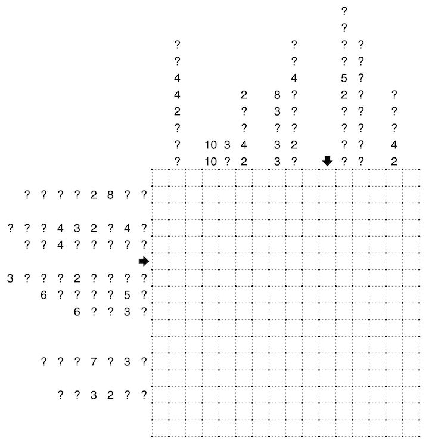

I wanted to set a normal Summation Slitherlink puzzle, but it seems the arrival of a giant coral has made this a huge mess. The coral is at least as you have seen before: totally connected, contains no 2x2 area, has no loops, and doesn't touch itself anywhere - even diagonally.
Standard Summation Slitherlink rules also apply. A non-intersecting loop is to be drawn along the edges of some cells in the grid, and clues outside the grid indicate the total number of edges used by each group of connected cells inside the loop in the row or column.
When the coral appeared, I thankfully already finished constructing the slitherlink, so it was unable to get inside the loop anywhere. However, this made the outside clues a bit more complicated as lists of clues now also include the coral hints as well. Coral hints, to be clear, just indicate the length of a segment of coral in that row or column. At least where clues are given, they are complete, and everything is written in order of appearance... none of that 'sorted in increasing order' nonsense. A question mark may be any value.
This should be enough to draw the loop and identify the coral.
Below we can find an example, which can be attempted here.
And here is the main puzzle:
